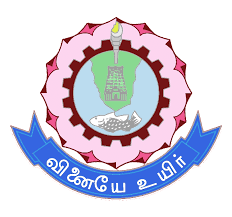

Find teammates
Meet students with complementary skills and interests across your campus community.

TCEMateA STUDENT COLLABORATION NETWORK AT TCE
Team up. Build together.
Connect with students, discover projects, form teams and move good ideas forward.
01 Explore the portal ↓Thiagarajar College of Engineering · Madurai
BUILT FOR CAMPUS COLLABORATION
Turn individual interests into shared projects with one place to discover, connect and organize.
Meet students with complementary skills and interests across your campus community.
Explore opportunities shared by students and find a project that fits your goals.
Share an idea, review applications and bring the right collaborators together.
Use discussions and notifications to keep collaboration moving forward.
FROM IDEA TO TEAM
Each step helps students move from finding an opportunity to working together.
Explore student-led work and opportunities.
Apply to the projects that match your interests.
Project owners review applicants and build a team.
Use project discussions to share progress and ideas.
ONE PORTAL, CONNECTED WORKFLOWS
Browse real listings and explore project details.
Share opportunities and manage project applications.
Post questions, share ideas and start conversations.
Present your skills and interests to potential teammates.
Stay informed about updates related to your activity.
Follow the status of your project interests.
YOUR NEXT COLLABORATION STARTS HERE